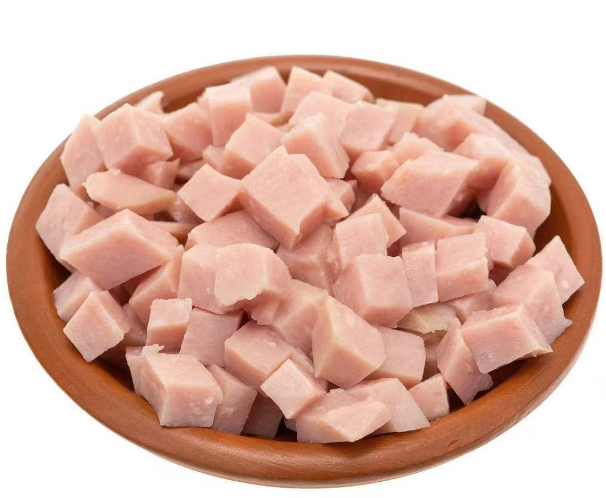

优先选金华火腿/宣威火腿的精肉部位（无过多肥膘），咸香浓郁提味；家常替代可选低脂火腿片/午餐肉，口感更柔和，适合老人小孩。
火腿丁处理+炒制：去腥减咸，炒出焦香更提味
金华/宣威火腿（偏咸，重点减咸提香）
1. 切0.8cm左右小丁，用温水浸泡5-10分钟，挤干水分（去掉多余咸味，避免炒饭过咸）;
2. 无油热锅下入火腿丁，小火干煸30秒，煸出火腿本身的油脂和焦香，盛出备用;
家常火腿片/午餐肉（微咸，直接炒香即可）
1. 切同等大小小丁，无需浸泡;
2. 少许底油热锅，小火炒1分钟至表面微焦，盛出备用（焦香口感更适配炒饭）